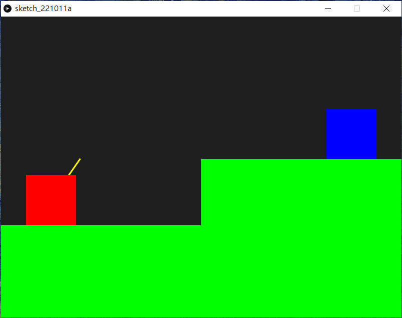

Artillery game
炮術遊戲（Artillery）是早期回合制策略電子遊戲的代名詞，坦克互相射擊，考慮彈道計算、地形、彈藥和風向等問題。
Artillery game0. 本章重點1. 加速度與拋物線1.1 自由落體1.2 拋物運動2. 建立兩個玩家3. 繪畫控制的投射速度線4. 控制投射速度線5. 嘗試直線發炮6. 加入重力(加速度)7. 加入風速8. 判斷是否落地9. 判斷是否打中P1或P210. 打中地面後變成對方回合11. 設定擊中對方後加分和進入下一回合12. 考考你
這類型的遊戲最早在1970年代中以demo遊戲出現，名叫Artillery(抱歉太舊的關係，我在維基也找不到相片)，後來隨著顯卡的提升，到1980年代在Apple II中推出過Super Artillery和Artillery Simulator。

後來再到IBM電腦年代，推出過名叫Scorched Earth的遊戲。這款遊戲除了之前炮彈互射的遊戲功能外，當炮彈打到地後，也會留下一個洞，這就需要電腦的效能支援。
按著在1995年由Team17推出的Worms(蟲蟲大戰)，就真正是經典遊戲。遊戲同樣是探用回合制，但今次蟲蟲是可以行走的，而且可以好似蜘蛛俠一樣盪來盪去(我自己玩過的版本就是，不知道1995年的初版是否可以)，而且有不同的武器可以選擇，有些是威力強大到會留下大洞的炮彈，有些是手槍和地雷等等。後來這遊戲一直都有推出不同的版本，到今天你也可以在各大遊戲平台買得到這款遊戲，玩法也差不多。(不過我記得我玩過的版本並非回合制的，而是畫面分半一同操作的，兩個人在電腦面前按著同一個鍵盤，互相找出對方)
![Worms (1995) [MS-DOS] - YouTube](maxresdefault.jpg)
順帶一提，千禧年初，3A大作已經十分流行，當年網路剛興起，網站流行用flash制作動畫效果，同時也興起一堆體積不大的小遊戲，例如比加超打排球，小朋友落樓梯，小朋友齊打架等等，而其中一款中外同樣經典的，就是Fleabag Vs. Mutt，我們一般會叫它貓狗大戰。玩法就跟80年的的Artillery Simulator一模一樣，都是採用回合制，設定投擲力度和角度，配合環境風速，互相擲罐子或骨頭。遊戲雖然簡單，但因遊戲體積小，容易得到容易上手，當年是跟朋友殺時間的好幫手。(我不也肯定下圖是原版flash遊戲，網路上也找不到原版的flash檔)

今章要制作的，是類似上面的Artillery Simulator和貓狗大戰的回合制遊戲。
0. 本章重點
向量(vector)(求大小與方向)
加速度與拋物線
用歐拉方法求積分解
函數(Function)應用複習
1. 加速度與拋物線
1.1 自由落體
傳說1590年伽利略曾在義大利比薩斜塔上做自由落體實驗，將兩個重量不同的球體從相同的高度同時扔下，結果兩個鉛球同時落地，伽利略在比薩斜塔做自由落體實驗的故事，記載在他的學生維維亞尼在1654年寫的《伽利略生平的歷史故事》（1717年出版）一書中，但伽利略、比薩大學和同時代的其他人都沒有關於這次實驗的的記載。對於伽利略是否在比薩斜塔做過自由落體實驗，歷史上一直存在著支持和反對兩種不同的看法。
1971年，阿波羅15號太空人在月球上同時丟下獵鷹羽毛與鐵鎚，證明伽利略理論正確。
在真空(無空氣阻力)的狀況下，一個物體自由落體的距離，受著重力影響，落下距離與時間的平方成正比。舉例說，在下圖是用攝影機拍攝跨度為半秒的相片(半秒20幀)，在首0.05秒落下的距離為1個單位(約12mm)，在0.1秒時，其落下距離為4個單位，在0.15秒時距離為9個單位，如此類推。
1.2 拋物運動
由於受到重力的影響，物體在被拋出後，垂直(向下)的速度會不停加速，而水平的速度則不受影響，型成的曲線就叫拋物線(Parabola)。拋物線(Parabola)在數學上是一條二次方曲線。

等等等，不要走，我知道你快要頭腦爆炸了!!!!!!
這裡不想帶出更多的數學和物理，令事情更複雜，你唯一需要知道的是：
重力影響會令落下距離與時間的平方成正比，簡言之，落下的速度與時間成正比，地球自由落體加速度大約是10
計算拋物線時，水平和垂直的距離和速度是可以分開計算的，互相獨立；


2. 建立兩個玩家
x1player1Height = 02player2Height = 03
4tankSize = 20 #the size of rect of the tanks5
6def setup():7 global player1Height, player2Height8 9 size(800, 600)10 11 player1Height = random(height*0.2, height*0.8)12 player2Height = height - player1Height13
14 15def draw():16 background(30)17 18 # draw the tanks19 rectMode(CENTER)20 noStroke() #沒有框線21 fill(255, 0, 0)22 rect(100, player1Height, tankSize, tankSize)23 fill(0, 0, 255)24 rect(width - 100, player2Height, tankSize, tankSize)25 26 # draw the ground27 rectMode(CORNERS) #use corner to corner mode28 noStroke() #沒有框線29 fill(0, 255, 0)30 rect(0, player1Height + tankSize/2, width/2, height)31 rect(width/2, player2Height + tankSize/2, width, height)
xxxxxxxxxx21player1Height = random(height*0.2, height*0.8)2player2Height = height - player1Height在setup()中，加入這兩句來初始化兩個玩家一開始的高度。由於想加一點遊戲性，盡量兩個玩家是一高一低。
3. 繪畫控制的投射速度線
xxxxxxxxxx461player1Height = 02player2Height = 03
4Round = 0 #player1 or player25ballPos = PVector() # position of cannonball6ballVec = PVector() # velocity of cannonball7
8tankSize = 20 #the size of rect of the tanks9
10def setup():11 global player1Height, player2Height, Round, ballPos, ballVec12 13 size(800, 600)14 15 player1Height = random(height*0.2, height*0.8)16 player2Height = height - player1Height17 18 Round = 1 #一開始為player1回合19 ballPos = PVector(100, player1Height) #一開始設定為player1的位置20 ballVec = PVector(2.5, 0) #一開始指向水平右方,速度為2.521
22 23def draw():24 global ballPos, ballVec, Round25 26 background(30)27 28 # draw the velocity arrow29 stroke(255, 255, 0) #框線顏色30 strokeWeight(3) #框線粗度度31 line(100, player1Height, 100 + ballVec.x * 50, player1Height + ballVec.y *50) 32 33 # draw the tanks34 rectMode(CENTER)35 noStroke() #沒有框線36 fill(255, 0, 0)37 rect(100, player1Height, tankSize, tankSize)38 fill(0, 0, 255)39 rect(width - 100, player2Height, tankSize, tankSize)40 41 # draw the ground42 rectMode(CORNERS) #use corner to corner mode43 noStroke() #沒有框線44 fill(0, 255, 0)45 rect(0, player1Height + tankSize/2, width/2, height)46 rect(width/2, player2Height + tankSize/2, width, height)
xxxxxxxxxx31Round = 0 #player1 or player22ballPos = PVector() # position of cannonball3ballVec = PVector() # velocity of cannonball在宣告區，開設一個變數叫Round紀錄現在這個回合是player1還是player2(記得Round要大寫, round是processing.py原本的指令，是用來使四捨五入的)。另外開設兩個向量變數，用來紀錄炮彈的位置和速度。
xxxxxxxxxx31Round = 1 #一開始為player1回合2ballPos = PVector(100, player1Height) #一開始設定為player1的位置3ballVec = PVector(2.5, 0) #一開始指向水平右方,速度為2.5同樣地，在setup()區中，初始化這三個數的值，方便之後可以一鍵重啟這個遊戲。ballPos的值設定在player1相同的位置。而ballVec的初始值則設成
4. 控制投射速度線
xxxxxxxxxx591player1Height = 02player2Height = 03
4Round = 0 #player1 or player25ballPos = PVector() # position of cannonball6ballVec = PVector() # velocity of cannonball7
8tankSize = 20 #the size of rect of the tanks9
10def setup():11 global player1Height, player2Height, Round, ballPos, ballVec12 13 size(800, 600)14 15 player1Height = random(height*0.2, height*0.8)16 player2Height = height - player1Height17 18 Round = 1 #一開始為player1回合19 ballPos = PVector(100, player1Height) #一開始設定為player1的位置20 ballVec = PVector(2.5, 0) #一開始指向水平右方,速度為2.521
22 23def draw():24 global ballPos, ballVec, Round25 26 background(30)27 28 # draw the velocity arrow29 stroke(255, 255, 0) #框線顏色30 strokeWeight(3) #框線粗度度31 line(100, player1Height, 100 + ballVec.x * 10, player1Height + ballVec.y * 10) 32 33 # draw the tanks34 rectMode(CENTER)35 noStroke() #沒有框線36 fill(255, 0, 0)37 rect(100, player1Height, tankSize, tankSize)38 fill(0, 0, 255)39 rect(width - 100, player2Height, tankSize, tankSize)40 41 # draw the ground42 rectMode(CORNERS) #use corner to corner mode43 noStroke() #沒有框線44 fill(0, 255, 0)45 rect(0, player1Height + tankSize/2, width/2, height)46 rect(width/2, player2Height + tankSize/2, width, height)47 48def keyPressed():49 global ballVec50 if Round == 1:51 if key == 'W' or key == 'w':52 ballVec = ballVec.mult(1.1)53 ballVec.limit(10)54 if key == 'S' or key == 's':55 ballVec = ballVec.mult(0.9)56 if key == 'A' or key == 'a':57 ballVec = ballVec.rotate(radians(-5))58 if key == 'D' or key == 'd':59 ballVec = ballVec.rotate(radians(5))
xxxxxxxxxx121def keyPressed():2 global ballVec3 if Round == 1:4 if key == 'W' or key == 'w':5 ballVec = ballVec.mult(1.1)6 ballVec.limit(10)7 if key == 'S' or key == 's':8 ballVec = ballVec.mult(0.9)9 if key == 'A' or key == 'a':10 ballVec = ballVec.rotate(radians(-5))11 if key == 'D' or key == 'd':12 ballVec = ballVec.rotate(radians(5))在setup()和draw()加入第三個內置的函數叫做keyPressed()。當Round == 1，即現在的玩家時player1時，按下w和s鍵，則是控制速度向量的大小，利用PVector內置的乘法，就可以將向量乘大或者乘小；當按下a或者d時鍵，則控制其方向的變化，同樣地，PVector內置了功能，可以將向量旋轉，不用自己做數學運算。值得一提是，processing.py所有的角度，預設都是radians(弧度)的，要用指令radians()將輸入的角度轉換成弧度。有關甚麼是弧度可以參考這裡，而有關甚麼是向量乘法可以參考這裡，最後向量旋轉則較為複雜，可以參考這裡。

processing的旋轉角度跟數學不同，是順時針而非逆時針的
5. 嘗試直線發炮
xxxxxxxxxx771player1Height = 02player2Height = 03
4Round = 0 #player1 or player25ballPos = PVector() # position of cannonball6ballVec = PVector() # velocity of cannonball7
8tankSize = 20 #the size of rect of the tanks9
10trigger = False11
12def setup():13 global player1Height, player2Height, Round, ballPos, ballVec, trigger14 15 size(800, 600)16 17 player1Height = random(height*0.2, height*0.8)18 player2Height = height - player1Height19 20 Round = 1 #一開始為player1回合21 ballPos = PVector(100, player1Height) #一開始設定為player1的位置22 ballVec = PVector(2.5, 0) #一開始指向水平右方,速度為2.523
24 trigger = False25 26def draw():27 global ballPos, ballVec28 29 background(30)30 31 # draw the velocity arrow32 stroke(255, 255, 0) #框線顏色33 strokeWeight(3) #框線粗度度34 line(100, player1Height, 100 + ballVec.x * 10, player1Height + ballVec.y * 10) 35 36 # draw the tanks37 rectMode(CENTER)38 noStroke() #沒有框線39 fill(255, 0, 0)40 rect(100, player1Height, tankSize, tankSize)41 fill(0, 0, 255)42 rect(width - 100, player2Height, tankSize, tankSize)43 44 # draw the cannonball45 if trigger:46 # update the cannonball47 ballPos = ballPos.add(ballVec)48 49 # draw the cannonball50 noStroke() #無框線51 fill(127) #灰色52 ellipse(ballPos.x, ballPos.y, 20, 20)53 54 # draw the ground55 rectMode(CORNERS) #use corner to corner mode56 noStroke() #沒有框線57 fill(0, 255, 0)58 rect(0, player1Height + tankSize/2, width/2, height)59 rect(width/2, player2Height + tankSize/2, width, height)60 61def keyPressed():62 global ballVec, trigger63 if Round == 1:64 if key == 'W' or key == 'w':65 ballVec = ballVec.mult(1.1)66 ballVec.limit(10)67 if key == 'S' or key == 's':68 ballVec = ballVec.mult(0.9)69 if key == 'A' or key == 'a':70 ballVec = ballVec.rotate(radians(-5))71 if key == 'D' or key == 'd':72 ballVec = ballVec.rotate(radians(5))73 74 if key == ' ':75 trigger = not trigger76 if key == 'R' or key == 'r':77 setup()
xxxxxxxxxx11trigger = False在宣告區加多一個變數名為trigger，用來在確認航道時發射炮彈的。記得在setup()區中也需要初始化一次，方便之後restart遊戲。
xxxxxxxxxx91# draw the cannonball2if trigger:3 # update the cannonball4 ballPos = ballPos.add(ballVec)5
6 # draw the cannonball7 noStroke() #無框線8 fill(127) #灰色9 ellipse(ballPos.x, ballPos.y, 20, 20)在draw()中，加入，如果trigger是True的話(下面的keyPressed()函數控制)，即準備好要發射；跟之前彈珠一樣，每次draw()更新時，都將ballVec這個向量，累加到ballPos這個向量中，就會見到炮彈向著直線發射。
xxxxxxxxxx41if key == ' ':2 trigger = not trigger3if key == 'R' or key == 'r':4 setup()在最下的keyPressed()函數中，加多兩個鍵盤按鍵，一個是空白鍵，用來發射；另一個跟之前一樣，用r鍵用來重設遊戲。
6. 加入重力(加速度)
xxxxxxxxxx811player1Height = 02player2Height = 03
4Round = 0 #player1 or player25ballPos = PVector() # position of cannonball6ballVec = PVector() # velocity of cannonball7ballAccel = PVector(0, 0.1) # acceleration of cannonball8 #由於processing.py的y軸是向下的, 所以不需要轉成負數9
10tankSize = 20 #the size of rect of the tanks11
12trigger = False13
14def setup():15 global player1Height, player2Height, Round, ballPos, ballVec, trigger16 17 size(800, 600)18 19 player1Height = random(height*0.2, height*0.8)20 player2Height = height - player1Height21 22 Round = 1 #一開始為player1回合23 ballPos = PVector(100, player1Height) #一開始設定為player1的位置24 ballVec = PVector(2.5, 0) #一開始指向水平右方,速度為2.525
26 trigger = False27 28def draw():29 global ballPos, ballVec30 31 background(30)32 33 # draw the velocity arrow34 if not trigger:35 stroke(255, 255, 0) #框線顏色36 strokeWeight(3) #框線粗度度37 line(100, player1Height, 100 + ballVec.x * 10, player1Height + ballVec.y * 10) 38 39 # draw the tanks40 rectMode(CENTER)41 noStroke() #沒有框線42 fill(255, 0, 0)43 rect(100, player1Height, tankSize, tankSize)44 fill(0, 0, 255)45 rect(width - 100, player2Height, tankSize, tankSize)46 47 # draw the cannonball48 if trigger:49 # update the cannonball50 ballVec = ballVec.add(ballAccel)51 ballPos = ballPos.add(ballVec)52 53 # draw the cannonball54 noStroke() #無框線55 fill(127) #灰色56 ellipse(ballPos.x, ballPos.y, 20, 20)57 58 # draw the ground59 rectMode(CORNERS) #use corner to corner mode60 noStroke() #沒有框線61 fill(0, 255, 0)62 rect(0, player1Height + tankSize/2, width/2, height)63 rect(width/2, player2Height + tankSize/2, width, height)64 65def keyPressed():66 global ballVec, trigger67 if Round == 1 and not trigger:68 if key == 'W' or key == 'w':69 ballVec = ballVec.mult(1.1)70 ballVec.limit(10)71 if key == 'S' or key == 's':72 ballVec = ballVec.mult(0.9)73 if key == 'A' or key == 'a':74 ballVec = ballVec.rotate(radians(-5))75 if key == 'D' or key == 'd':76 ballVec = ballVec.rotate(radians(5))77 78 if key == ' ':79 trigger = not trigger80 if key == 'R' or key == 'r':81 setup()
xxxxxxxxxx21ballAccel = PVector(0, 0.1) # acceleration of cannonball2 #由於processing.py的y軸是向下的, 所以不需要轉成負數在宣告區中，加入球的加速度，今次不用在setup()中再初始化，因加速度是保持不變的。由於processing.py的y軸是向下的，所以不需要像物理一樣，將加速度設成負數。
xxxxxxxxxx51# draw the velocity arrow2if not trigger:3 stroke(255, 255, 0) #框線顏色4 strokeWeight(3) #框線粗度度5 line(100, player1Height, 100 + ballVec.x * 10, player1Height + ballVec.y * 10) 在draw()中，將原本繪畫速度箭頭的位置，加入發射後就會消失，否則一改變速度向量，你就會見到速度箭頭會跟著向下，會有點奇怪。
xxxxxxxxxx171def keyPressed():2 global ballVec, trigger3 if Round == 1 and not trigger:4 if key == 'W' or key == 'w':5 ballVec = ballVec.mult(1.1)6 ballVec.limit(10)7 if key == 'S' or key == 's':8 ballVec = ballVec.mult(0.9)9 if key == 'A' or key == 'a':10 ballVec = ballVec.rotate(radians(-5))11 if key == 'D' or key == 'd':12 ballVec = ballVec.rotate(radians(5))13 14 if key == ' ':15 trigger = not trigger16 if key == 'R' or key == 'r':17 setup()同樣地，在keyPressed()函數中，原本的if Round == 1:，要額外加上if Round == 1 and not trigger:，否則在開炮後，也能"遙控"炮彈。
xxxxxxxxxx101# draw the cannonball2if trigger:3 # update the cannonball4 ballVec = ballVec.add(ballAccel)5 ballPos = ballPos.add(ballVec)6
7 # draw the cannonball8 noStroke() #無框線9 fill(127) #灰色10 ellipse(ballPos.x, ballPos.y, 20, 20)回到draw()中，要做到拋物線效果，其實很簡單，也很"物理"，加速度的意思是每一秒的速度也在累加，而球的位置則是初始位置再累加速度，所以只要在每次draw()更新時，將向量ballAccel加上向量ballVec，之後再將向量ballVec，加上向量ballPos，就可以模擬到拋線的效果。
7. 加入風速
這類型的炮彈遊戲，為增加可玩性和模糊真實環境，會加入風速的選項。
xxxxxxxxxx861player1Height = 02player2Height = 03
4Round = 0 #player1 or player25ballPos = PVector() # position of cannonball6ballVec = PVector() # velocity of cannonball7ballAccel = PVector(0, 0.1) # acceleration of cannonball8 #由於processing.py的y軸是向下的, 所以不需要轉成負數9
10windAccel = PVector()11
12tankSize = 20 #the size of rect of the tanks13
14trigger = False15
16def setup():17 global player1Height, player2Height, Round, ballPos, ballVec, trigger, windAccel18 19 size(800, 600)20 21 player1Height = random(height*0.2, height*0.8)22 player2Height = height - player1Height23 24 Round = 1 #一開始為player1回合25 ballPos = PVector(100, player1Height) #一開始設定為player1的位置26 ballVec = PVector(2.5, 0) #一開始指向水平右方,速度為2.527
28 trigger = False29 30 windAccel = PVector(random(-0.01, 0.01), 0)31 32def draw():33 global ballPos, ballVec34 35 background(30)36 37 # draw the velocity arrow38 if not trigger:39 stroke(255, 255, 0) #框線顏色40 strokeWeight(3) #框線粗度度41 line(100, player1Height, 100 + ballVec.x * 10, player1Height + ballVec.y * 10) 42 43 # draw the tanks44 rectMode(CENTER)45 noStroke() #沒有框線46 fill(255, 0, 0)47 rect(100, player1Height, tankSize, tankSize)48 fill(0, 0, 255)49 rect(width - 100, player2Height, tankSize, tankSize)50 51 # draw the cannonball52 if trigger:53 # update the cannonball54 ballVec = ballVec.add(ballAccel)55 ballVec = ballVec.add(windAccel)56 ballPos = ballPos.add(ballVec)57 58 # draw the cannonball59 noStroke() #無框線60 fill(127) #灰色61 ellipse(ballPos.x, ballPos.y, 20, 20)62 63 # draw the ground64 rectMode(CORNERS) #use corner to corner mode65 noStroke() #沒有框線66 fill(0, 255, 0)67 rect(0, player1Height + tankSize/2, width/2, height)68 rect(width/2, player2Height + tankSize/2, width, height)69 70def keyPressed():71 global ballVec, trigger72 if Round == 1 and not trigger:73 if key == 'W' or key == 'w':74 ballVec = ballVec.mult(1.1)75 ballVec.limit(10)76 if key == 'S' or key == 's':77 ballVec = ballVec.mult(0.9)78 if key == 'A' or key == 'a':79 ballVec = ballVec.rotate(radians(-5))80 if key == 'D' or key == 'd':81 ballVec = ballVec.rotate(radians(5))82 83 if key == ' ':84 trigger = not trigger85 if key == 'R' or key == 'r':86 setup()
xxxxxxxxxx11windAccel = PVector()在最上方的宣告區中，宣告一個global的變數叫windAccel。
xxxxxxxxxx11windAccel = PVector(random(-0.01, 0.01), 0)在setup()區中，初始化這個值。
xxxxxxxxxx111# draw the cannonball2if trigger:3 # update the cannonball4 ballVec = ballVec.add(ballAccel)5 ballVec = ballVec.add(windAccel)6 ballPos = ballPos.add(ballVec)7
8 # draw the cannonball9 noStroke() #無框線10 fill(127) #灰色11 ellipse(ballPos.x, ballPos.y, 20, 20)之後在draw()區中，在更新球的位置時，除了y軸的地心加速度，額外加入水平的x軸加速度。
之後就可以先試一試是否成功才進行下一步。將炮彈發射方向指向天來發射，就可以很清楚地看得到，如果風速沒有成功，炮彈會直上直下，但如果風速成功的話，就會被次向左邊或者右邊。
8. 判斷是否落地
xxxxxxxxxx1011player1Height = 02player2Height = 03
4Round = 0 #player1 or player25ballPos = PVector() # position of cannonball6ballVec = PVector() # velocity of cannonball7ballAccel = PVector(0, 0.1) # acceleration of cannonball8 #由於processing.py的y軸是向下的, 所以不需要轉成負數9
10windAccel = PVector()11
12tankSize = 20 #the size of rect of the tanks13
14trigger = False15
16def setup():17 global player1Height, player2Height, Round, ballPos, ballVec, trigger, windAccel18 19 size(800, 600)20 21 player1Height = random(height*0.2, height*0.8)22 player2Height = height - player1Height23 24 Round = 1 #一開始為player1回合25 ballPos = PVector(100, player1Height) #一開始設定為player1的位置26 ballVec = PVector(2.5, 0) #一開始指向水平右方,速度為2.527
28 trigger = False29 30 windAccel = PVector(random(-0.01, 0.01), 0)31
32 33def draw():34 global ballPos, ballVec35 36 background(30)37 38 # draw the velocity arrow39 if not trigger:40 stroke(255, 255, 0) #框線顏色41 strokeWeight(3) #框線粗度度42 line(100, player1Height, 100 + ballVec.x * 10, player1Height + ballVec.y * 10) 43 44 # draw the tanks45 rectMode(CENTER)46 noStroke() #沒有框線47 fill(255, 0, 0)48 rect(100, player1Height, tankSize, tankSize)49 fill(0, 0, 255)50 rect(width - 100, player2Height, tankSize, tankSize)51 52 # draw the cannonball53 if trigger:54 # update the cannonball55 ballVec = ballVec.add(ballAccel)56 ballVec = ballVec.add(windAccel)57 ballPos = ballPos.add(ballVec)58 59 # draw the cannonball60 noStroke() #無框線61 fill(127) #灰色62 ellipse(ballPos.x, ballPos.y, 20, 20)63 64 # draw the ground65 rectMode(CORNERS) #use corner to corner mode66 noStroke() #沒有框線67 fill(0, 255, 0)68 rect(0, player1Height + tankSize/2, width/2, height)69 rect(width/2, player2Height + tankSize/2, width, height)70 71 # cannonball hit the player1 ground72 hitP1Ground = isHitGround(ballPos, PVector(0, player1Height), PVector(width/2, height))73 # cannonball hit the player1 ground74 hitP2Ground = isHitGround(ballPos, PVector(width/2, player2Height), PVector(width, height))75 # cannonball hit player1 ground or player2 ground76 if hitP1Ground or hitP2Ground:77 print("something")78 79def keyPressed():80 global ballVec, trigger81 if Round == 1 and not trigger:82 if key == 'W' or key == 'w':83 ballVec = ballVec.mult(1.1)84 ballVec.limit(10)85 if key == 'S' or key == 's':86 ballVec = ballVec.mult(0.9)87 if key == 'A' or key == 'a':88 ballVec = ballVec.rotate(radians(-5))89 if key == 'D' or key == 'd':90 ballVec = ballVec.rotate(radians(5))91 92 if key == ' ':93 trigger = not trigger94 if key == 'R' or key == 'r':95 setup()96 97def isHitGround(_ballPos, _topLeftCorner, _bottomRightCorner):98 if _ballPos.x > _topLeftCorner.x and _ballPos.y > _topLeftCorner.y and _ballPos.x < _bottomRightCorner.x and _ballPos.y < _bottomRightCorner.y:99 return True100 else:101 return False
xxxxxxxxxx51def isHitGround(_ballPos, _topLeftCorner, _bottomRightCorner):2 if _ballPos.x > _topLeftCorner.x and _ballPos.y > _topLeftCorner.y and _ballPos.x < _bottomRightCorner.x and _ballPos.y < _bottomRightCorner.y:3 return True4 else:5 return False跟之前一樣，在setup()和draw()之後，額外開一個函數(function)，方便我們將功能相似但重覆的功能組合在一起。
今次函數有3個輸入，分別為_ballPos, _topLeftCorner和_bottomRightCorner，顧名思意，是球的座標，左上角的座標和右下角的座標。內容也很簡單，如果球落入這個範圍就傳回True，否則就傳回False。
xxxxxxxxxx71# cannonball hit the player1 ground2hitP1Ground = isHitGround(ballPos, PVector(0, player1Height), PVector(width/2, height))3# cannonball hit the player1 ground4hitP2Ground = isHitGround(ballPos, PVector(width/2, player2Height), PVector(width, height))5# cannonball hit player1 ground or player2 ground6if hitP1Ground or hitP2Ground:7 print("something")之後在draw()的最後，加入這一段：開兩個變數，如果打中player1的地下範圍或打中player2的地下範圍，則print("something")，用來測試一下程式是否正確。
9. 判斷是否打中P1或P2
xxxxxxxxxx1141player1Height = 02player2Height = 03
4Round = 0 #player1 or player25ballPos = PVector() # position of cannonball6ballVec = PVector() # velocity of cannonball7ballAccel = PVector(0, 0.1) # acceleration of cannonball8 #由於processing.py的y軸是向下的, 所以不需要轉成負數9
10windAccel = PVector()11
12tankSize = 100 #the size of rect of the tanks13
14trigger = False15
16def setup():17 global player1Height, player2Height, Round, ballPos, ballVec, trigger, windAccel18 19 size(800, 600)20 21 player1Height = random(height*0.2, height*0.8)22 player2Height = height - player1Height23 24 Round = 1 #一開始為player1回合25 ballPos = PVector(100, player1Height) #一開始設定為player1的位置26 ballVec = PVector(2.5, 0) #一開始指向水平右方,速度為2.527
28 trigger = False29 30 windAccel = PVector(random(-0.01, 0.01), 0)31
32 33def draw():34 global ballPos, ballVec35 36 background(30)37 38 # draw the velocity arrow39 if not trigger:40 stroke(255, 255, 0) #框線顏色41 strokeWeight(3) #框線粗度度42 line(100, player1Height, 100 + ballVec.x * 10, player1Height + ballVec.y * 10) 43 44 # draw the tanks45 rectMode(CENTER)46 noStroke() #沒有框線47 fill(255, 0, 0)48 rect(100, player1Height, tankSize, tankSize)49 fill(0, 0, 255)50 rect(width - 100, player2Height, tankSize, tankSize)51 52 # draw the cannonball53 if trigger:54 # update the cannonball55 ballVec = ballVec.add(ballAccel)56 ballVec = ballVec.add(windAccel)57 ballPos = ballPos.add(ballVec)58 59 # draw the cannonball60 noStroke() #無框線61 fill(127) #灰色62 ellipse(ballPos.x, ballPos.y, 20, 20)63 64 # draw the ground65 rectMode(CORNERS) #use corner to corner mode66 noStroke() #沒有框線67 fill(0, 255, 0)68 rect(0, player1Height + tankSize/2, width/2, height)69 rect(width/2, player2Height + tankSize/2, width, height)70 71 # cannonball hit the player1 ground72 hitP1Ground = isHitGround(ballPos, PVector(0, player1Height+ tankSize/2), PVector(width/2, height))73 # cannonball hit the player1 ground74 hitP2Ground = isHitGround(ballPos, PVector(width/2, player2Height+ tankSize/2), PVector(width, height))75 # cannonball hit player1 ground or player2 ground76 if hitP1Ground or hitP2Ground:77 print("something")78 79 hitP1 = isHitPlayer(ballPos, PVector(100, player1Height), tankSize)80 if hitP1:81 print("P1 hit")82 hitP2 = isHitPlayer(ballPos, PVector(width-100, player2Height), tankSize)83 if hitP2:84 print("P2 hit")85 86def keyPressed():87 global ballVec, trigger88 if Round == 1 and not trigger:89 if key == 'W' or key == 'w':90 ballVec = ballVec.mult(1.1)91 ballVec.limit(10)92 if key == 'S' or key == 's':93 ballVec = ballVec.mult(0.9)94 if key == 'A' or key == 'a':95 ballVec = ballVec.rotate(radians(-5))96 if key == 'D' or key == 'd':97 ballVec = ballVec.rotate(radians(5))98 99 if key == ' ':100 trigger = not trigger101 if key == 'R' or key == 'r':102 setup()103 104def isHitGround(_ballPos, _topLeftCorner, _bottomRightCorner):105 if _ballPos.x > _topLeftCorner.x and _ballPos.y > _topLeftCorner.y and _ballPos.x < _bottomRightCorner.x and _ballPos.y < _bottomRightCorner.y:106 return True107 else:108 return False109 110def isHitPlayer(_ballPos, _tankCenter, _tankSize):111 if _ballPos.x > _tankCenter.x-_tankSize/2 and _ballPos.y > _tankCenter.y-_tankSize/2 and _ballPos.x < _tankCenter.x+_tankSize/2 and _ballPos.y < _tankCenter.y+_tankSize/2:112 return True113 else:114 return False
xxxxxxxxxx51def isHitPlayer(_ballPos, _tankCenter, _tankSize):2 if _ballPos.x > _tankCenter.x-_tankSize/2 and _ballPos.y > _tankCenter.y-_tankSize/2 and _ballPos.x < _tankCenter.x+_tankSize/2 and _ballPos.y < _tankCenter.y+_tankSize/2:3 return True4 else:5 return False在程式的最後面，除了之前的setup()，draw()和isHitGround()之後，額外再加一個函數名為isHitPlayer()。isHitGround()和isHitPlayer()其實十分相似，但前者第二和第三個輸入是方型的兩個對角，而後者由於player一開始繪畫時是先定義方型的中心，再定義方型大小的，故分開兩個函數方便運用。
我特意放大了兩部坦克的大小，方便測試一下是否正確，由於一開始球的初始位置就是在player1的中心點，所以程式一運行，就會不停彈出P1 hit，之後如常調試和發射(你可能要測試好幾次才能成功)，炮彈先是擊中player2, 之後再打到地面。
10. 打中地面後變成對方回合
xxxxxxxxxx1411player1Height = 02player2Height = 03
4Round = 0 #player1 or player25ballPos = PVector() # position of cannonball6ballVec = PVector() # velocity of cannonball7ballAccel = PVector(0, 0.1) # acceleration of cannonball8 #由於processing.py的y軸是向下的, 所以不需要轉成負數9
10windAccel = PVector()11
12tankSize = 100 #the size of rect of the tanks13
14trigger = False15
16def setup():17 global player1Height, player2Height, Round, ballPos, ballVec, trigger, windAccel18 19 size(800, 600)20 21 player1Height = random(height*0.2, height*0.8)22 player2Height = height - player1Height23 24 Round = 1 #一開始為player1回合25 ballPos = PVector(100, player1Height) #一開始設定為player1的位置26 ballVec = PVector(2.5, 0) #一開始指向水平右方,速度為2.527
28 trigger = False29 30 windAccel = PVector(random(-0.01, 0.01), 0)31
32 33def draw():34 global ballPos, ballVec, Round, trigger, windAccel35 36 background(30)37 38 # draw the velocity arrow39 if not trigger:40 if Round == 1:41 stroke(255, 255, 0) #框線顏色42 strokeWeight(3) #框線粗度度43 line(100, player1Height, 100 + ballVec.x * 10, player1Height + ballVec.y * 10) 44 elif Round == 2:45 stroke(255, 255, 0) #框線顏色46 strokeWeight(3) #框線粗度度47 line(width-100, player2Height, width-100 + ballVec.x * 10, player2Height + ballVec.y * 10) 48 49 # draw the tanks50 rectMode(CENTER)51 noStroke() #沒有框線52 fill(255, 0, 0)53 rect(100, player1Height, tankSize, tankSize)54 fill(0, 0, 255)55 rect(width - 100, player2Height, tankSize, tankSize)56 57 # draw the cannonball58 if trigger:59 # update the cannonball60 ballVec = ballVec.add(ballAccel)61 ballVec = ballVec.add(windAccel)62 ballPos = ballPos.add(ballVec)63 64 # draw the cannonball65 noStroke() #無框線66 fill(127) #灰色67 ellipse(ballPos.x, ballPos.y, 20, 20)68 69 # draw the ground70 rectMode(CORNERS) #use corner to corner mode71 noStroke() #沒有框線72 fill(0, 255, 0)73 rect(0, player1Height + tankSize/2, width/2, height)74 rect(width/2, player2Height + tankSize/2, width, height)75 76 # cannonball hit the player1 ground77 hitP1Ground = isHitGround(ballPos, PVector(0, player1Height+ tankSize/2), PVector(width/2, height))78 # cannonball hit the player1 ground79 hitP2Ground = isHitGround(ballPos, PVector(width/2, player2Height+ tankSize/2), PVector(width, height))80 # cannonball hit player1 ground or player2 ground81 if hitP1Ground or hitP2Ground:82 if Round == 1:83 ballPos = PVector(width-100, player2Height)84 Round = 285 ballVec = PVector(-2.5, 0) #一開始指向水平右方,速度為-2.586 trigger = False87 windAccel = PVector(random(-0.01, 0.01), 0) 88 elif Round == 2:89 ballPos = PVector(100, player1Height)90 Round = 191 ballVec = PVector(2.5, 0) #一開始指向水平右方,速度為2.592 trigger = False93 windAccel = PVector(random(-0.01, 0.01), 0)94 95 hitP1 = isHitPlayer(ballPos, PVector(100, player1Height), tankSize)96 if hitP1:97 print("P1 hit")98 hitP2 = isHitPlayer(ballPos, PVector(width-100, player2Height), tankSize)99 if hitP2:100 print("P2 hit")101 102def keyPressed():103 global ballVec, trigger104 if Round == 1 and not trigger:105 if key == 'W' or key == 'w':106 ballVec = ballVec.mult(1.1)107 ballVec.limit(10)108 if key == 'S' or key == 's':109 ballVec = ballVec.mult(0.9)110 if key == 'A' or key == 'a':111 ballVec = ballVec.rotate(radians(-5))112 if key == 'D' or key == 'd':113 ballVec = ballVec.rotate(radians(5))114 115 if Round == 2 and not trigger and key == CODED:116 if keyCode == UP:117 ballVec = ballVec.mult(1.1)118 ballVec.limit(10)119 if keyCode == DOWN:120 ballVec = ballVec.mult(0.9)121 if keyCode == LEFT:122 ballVec = ballVec.rotate(radians(-5))123 if keyCode == RIGHT:124 ballVec = ballVec.rotate(radians(5))125 126 if key == ' ':127 trigger = not trigger128 if key == 'R' or key == 'r':129 setup()130 131def isHitGround(_ballPos, _topLeftCorner, _bottomRightCorner):132 if _ballPos.x > _topLeftCorner.x and _ballPos.y > _topLeftCorner.y and _ballPos.x < _bottomRightCorner.x and _ballPos.y < _bottomRightCorner.y:133 return True134 else:135 return False136 137def isHitPlayer(_ballPos, _tankCenter, _tankSize):138 if _ballPos.x > _tankCenter.x-_tankSize/2 and _ballPos.y > _tankCenter.y-_tankSize/2 and _ballPos.x < _tankCenter.x+_tankSize/2 and _ballPos.y < _tankCenter.y+_tankSize/2:139 return True140 else:141 return False接著，就可以更新一下當炮彈打到地下後該發生甚麼事。
xxxxxxxxxx181# cannonball hit the player1 ground2hitP1Ground = isHitGround(ballPos, PVector(0, player1Height+ tankSize/2), PVector(width/2, height))3# cannonball hit the player1 ground4hitP2Ground = isHitGround(ballPos, PVector(width/2, player2Height+ tankSize/2), PVector(width, height))5# cannonball hit player1 ground or player2 ground6if hitP1Ground or hitP2Ground:7 if Round == 1:8 ballPos = PVector(width-100, player2Height)9 Round = 210 ballVec = PVector(-2.5, 0) #一開始指向水平右方,速度為-2.511 trigger = False12 windAccel = PVector(random(-0.01, 0.01), 0) 13 elif Round == 2:14 ballPos = PVector(100, player1Height)15 Round = 116 ballVec = PVector(2.5, 0) #一開始指向水平右方,速度為2.517 trigger = False18 windAccel = PVector(random(-0.01, 0.01), 0)當打中地面後，之前我們簡單測試時就只print一此文字出來測試效果，現在要告訴程式該發生甚麼事。打中地面後，如果現在是player1的回合，那麼就要變成player2的回合，反之亦然。球的初始位置也是，如果是player1的回合, 初始位置就是player1的位置, 如果是player2的回合就是player2的位置。接著重置球的初速ballVec和trigger變回False表示未發射，最後重置每回合的風速。(記得在draw()的設定這些變數做global變數)
xxxxxxxxxx281def keyPressed():2 global ballVec, trigger3 if Round == 1 and not trigger:4 if key == 'W' or key == 'w':5 ballVec = ballVec.mult(1.1)6 ballVec.limit(10)7 if key == 'S' or key == 's':8 ballVec = ballVec.mult(0.9)9 if key == 'A' or key == 'a':10 ballVec = ballVec.rotate(radians(-5))11 if key == 'D' or key == 'd':12 ballVec = ballVec.rotate(radians(5))13 14 if Round == 2 and not trigger and key == CODED:15 if keyCode == UP:16 ballVec = ballVec.mult(1.1)17 ballVec.limit(10)18 if keyCode == DOWN:19 ballVec = ballVec.mult(0.9)20 if keyCode == LEFT:21 ballVec = ballVec.rotate(radians(-5))22 if keyCode == RIGHT:23 ballVec = ballVec.rotate(radians(5))24 25 if key == ' ':26 trigger = not trigger27 if key == 'R' or key == 'r':28 setup()另一個要更新的地方是keyPressed()，之前我們只設定了player1是用W, A, S, D四個鍵，而現在要設定player2用鍵盤的方向鍵。比較特別的是，方向鍵為特別鍵，如果按下了，之前的變數key就會變成特別變數CODED，這些CODED特別鍵除了方向鍵外，也包括了ALT，CONTROL和SHIFT這些不在ASCII編碼1的鍵盤按鍵。
而要讀取這些不在ASCII編碼的鍵盤接鍵，就要用另一個特別變數叫keyCode，當按下這些接鍵時，key會變成CODED，而keyCode也會相應地變成這些特別按鍵。
11. 設定擊中對方後加分和進入下一回合
xxxxxxxxxx1541player1Height = 02player2Height = 03
4Round = 0 #player1 or player25ballPos = PVector() # position of cannonball6ballVec = PVector() # velocity of cannonball7ballAccel = PVector(0, 0.1) # acceleration of cannonball8 #由於processing.py的y軸是向下的, 所以不需要轉成負數9
10windAccel = PVector()11
12tankSize = 100 #the size of rect of the tanks13
14trigger = False15
16score1 = 017score2 = 018
19def setup():20 global player1Height, player2Height, score1, score221 22 size(800, 600)23 24 player1Height = random(height*0.2, height*0.8)25 player2Height = height - player1Height26 27 score1 = 028 score2 = 029 30 reset(2)31 32def draw():33 global ballPos, ballVec, score1, score234 35 background(30)36 37 # draw the velocity arrow38 if not trigger:39 if Round == 1:40 stroke(255, 255, 0) #框線顏色41 strokeWeight(3) #框線粗度度42 line(100, player1Height, 100 + ballVec.x * 10, player1Height + ballVec.y * 10) 43 elif Round == 2:44 stroke(255, 255, 0) #框線顏色45 strokeWeight(3) #框線粗度度46 line(width-100, player2Height, width-100 + ballVec.x * 10, player2Height + ballVec.y * 10) 47 48 # draw the tanks49 rectMode(CENTER)50 noStroke() #沒有框線51 fill(255, 0, 0)52 rect(100, player1Height, tankSize, tankSize)53 fill(0, 0, 255)54 rect(width - 100, player2Height, tankSize, tankSize)55 56 # draw the cannonball57 if trigger:58 # update the cannonball59 ballVec = ballVec.add(ballAccel)60 ballVec = ballVec.add(windAccel)61 ballPos = ballPos.add(ballVec)62 63 # draw the cannonball64 noStroke() #無框線65 fill(127) #灰色66 ellipse(ballPos.x, ballPos.y, 20, 20)67 68 # draw the ground69 rectMode(CORNERS) #use corner to corner mode70 noStroke() #沒有框線71 fill(0, 255, 0)72 rect(0, player1Height + tankSize/2, width/2, height)73 rect(width/2, player2Height + tankSize/2, width, height)74 75 # cannonball hit the player1 ground76 hitP1Ground = isHitGround(ballPos, PVector(0, player1Height+ tankSize/2), PVector(width/2, height))77 # cannonball hit the player1 ground78 hitP2Ground = isHitGround(ballPos, PVector(width/2, player2Height+ tankSize/2), PVector(width, height))79 # cannonball hit player1 ground or player2 ground80 if hitP1Ground or hitP2Ground:81 reset(Round)82
83 hitP1 = isHitPlayer(ballPos, PVector(100, player1Height), tankSize)84 if hitP1 and Round == 2:85 score2 += 186 reset(2)87 hitP2 = isHitPlayer(ballPos, PVector(width-100, player2Height), tankSize)88 if hitP2 and Round == 1:89 score1 += 190 reset(1)91 92 textSize(50)93 textAlign(CENTER, CENTER)94 if Round == 1:95 fill(255, 0, 0)96 elif Round == 2:97 fill(0, 0, 255)98 text(score1, width/4, 50)99 text(score2, width*3/4, 50)100 101def keyPressed():102 global ballVec, trigger103 if Round == 1 and not trigger:104 if key == 'W' or key == 'w':105 ballVec = ballVec.mult(1.1)106 ballVec.limit(10)107 if key == 'S' or key == 's':108 ballVec = ballVec.mult(0.9)109 if key == 'A' or key == 'a':110 ballVec = ballVec.rotate(radians(-5))111 if key == 'D' or key == 'd':112 ballVec = ballVec.rotate(radians(5))113 114 if Round == 2 and not trigger and key == CODED:115 if keyCode == UP:116 ballVec = ballVec.mult(1.1)117 ballVec.limit(10)118 if keyCode == DOWN:119 ballVec = ballVec.mult(0.9)120 if keyCode == LEFT:121 ballVec = ballVec.rotate(radians(-5))122 if keyCode == RIGHT:123 ballVec = ballVec.rotate(radians(5))124 125 if key == ' ':126 trigger = not trigger127 if key == 'R' or key == 'r':128 setup()129 130def isHitGround(_ballPos, _topLeftCorner, _bottomRightCorner):131 if _ballPos.x > _topLeftCorner.x and _ballPos.y > _topLeftCorner.y and _ballPos.x < _bottomRightCorner.x and _ballPos.y < _bottomRightCorner.y:132 return True133 else:134 return False135 136def isHitPlayer(_ballPos, _tankCenter, _tankSize):137 if _ballPos.x > _tankCenter.x-_tankSize/2 and _ballPos.y > _tankCenter.y-_tankSize/2 and _ballPos.x < _tankCenter.x+_tankSize/2 and _ballPos.y < _tankCenter.y+_tankSize/2:138 return True139 else:140 return False141 142def reset(_Round):143 global ballPos, ballVec, Round, trigger, windAccel144 if _Round == 1:145 ballPos = PVector(width-100, player2Height)146 Round = 2147 ballVec = PVector(-2.5, 0) #一開始指向水平右方,速度為-2.5148 elif _Round == 2:149 ballPos = PVector(100, player1Height)150 Round = 1151 ballVec = PVector(2.5, 0) #一開始指向水平右方,速度為2.5152 153 trigger = False154 windAccel = PVector(random(-0.01, 0.01), 0)
xxxxxxxxxx131def reset(_Round):2 global ballPos, ballVec, Round, trigger, windAccel3 if _Round == 1:4 ballPos = PVector(width-100, player2Height)5 Round = 26 ballVec = PVector(-2.5, 0) #一開始指向水平右方,速度為-2.57 elif _Round == 2:8 ballPos = PVector(100, player1Height)9 Round = 110 ballVec = PVector(2.5, 0) #一開始指向水平右方,速度為2.511 12 trigger = False13 windAccel = PVector(random(-0.01, 0.01), 0)開始寫之前，你會發現，每次球擊中對方或者球落地時，其實來來去去重設都是那幾句，不停地重覆，但每次都有少許不同，對，這時候就非常適合用函數了。開一個函數叫reset()，將原本擊中地下時重設的幾句都複製進去，唯一不同的是，今次函數有一個輸入，判斷現在回合不同作出不同反應。
xxxxxxxxxx121def setup():2 global player1Height, player2Height, score1, score23 4 size(800, 600)5 6 player1Height = random(height*0.2, height*0.8)7 player2Height = height - player1Height8 9 score1 = 010 score2 = 011 12 reset(2)現在setup()就簡潔很多了，當初好幾句設定初始的球位置、球速和風速的程式碼只需要化簡成一句就可以了。(記得是要設定為reset(2)，告訴程式現在是player2的回合，它才會在下一步設定為player1的回合)。而且你會發覺，當初一大堆global的變數，由於現在都不在setup()中設定變更，所以可以刪除，只剩4個。(同樣情況，在draw()中也是，只需要剩下這4個global變數需要變更)
xxxxxxxxxx251# cannonball hit the player1 ground2hitP1Ground = isHitGround(ballPos, PVector(0, player1Height+ tankSize/2), PVector(width/2, height))3# cannonball hit the player1 ground4hitP2Ground = isHitGround(ballPos, PVector(width/2, player2Height+ tankSize/2), PVector(width, height))5# cannonball hit player1 ground or player2 ground6if hitP1Ground or hitP2Ground:7 reset(Round)8 9hitP1 = isHitPlayer(ballPos, PVector(100, player1Height), tankSize)10if hitP1 and Round == 2:11 score2 += 112 reset(2)13hitP2 = isHitPlayer(ballPos, PVector(width-100, player2Height), tankSize)14if hitP2 and Round == 1:15 score1 += 116 reset(1)17 18textSize(50)19textAlign(CENTER, CENTER)20if Round == 1:21 fill(255, 0, 0)22elif Round == 2:23 fill(0, 0, 255)24text(score1, width/4, 50)25text(score2, width*3/4, 50)開設兩個變數score1和score2，在宣告區宣告和在setup()中設定初始值。接著在draw()中，將之前球擊到在地時的幾句化簡成reset(Round)，打中地後現在是哪個回合就重設哪個回合。
而之前打中對方時，只是print是否打中來測試，現在可以補回了，如果打中player1而現在又是player2的回合時，就為player2加分，否則，打中player2而且是player1的回合，就為player1加分。
最後將分數顯示在畫面上方。我在測試時發現很難即時判斷現在回合是player1還是player2，所以在分數的顏色上加了效果，會用紅色和藍色代表回合。
12. 考考你
當你測試時，你會發現有一個問題，就是當炮彈打不中地，又打不中對方，而飛出了畫面左邊或右邊時，是不會進入下一回合的(超出畫面上方不進入下一回合是刻意為之的)。我們修改一下遊戲，原遊戲設計並沒有這個設定，當球打中左邊或右邊畫面時，會反彈轉變方向，就像player1和player2身後有一面牆一樣。
原遊戲的風速有一個箭頭和文字顯示，方便用家跟據風速決定修正。請你幫遊戲加入這個風速箭頭，並將原來風速random的上下限加大一點，令遊戲更受風速的影響。